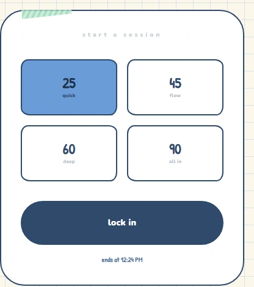
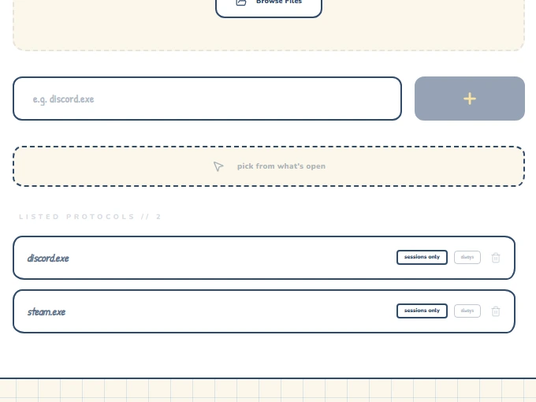
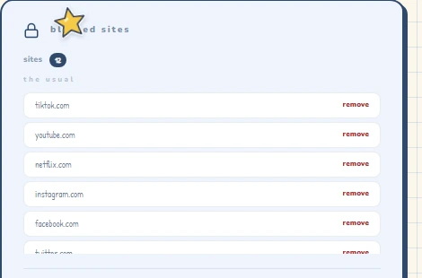
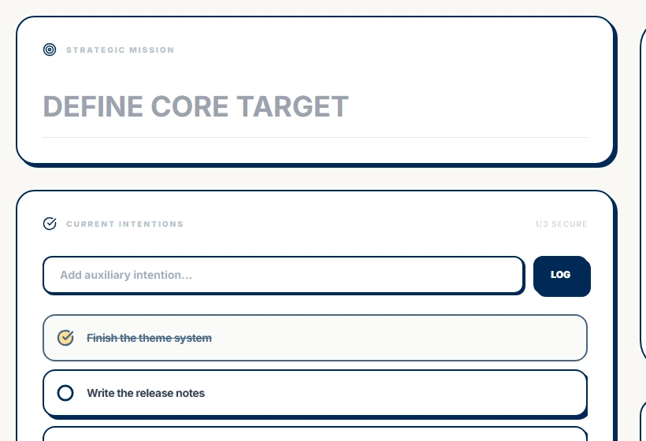
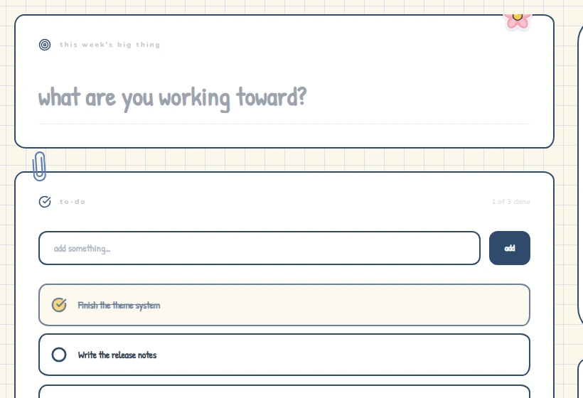
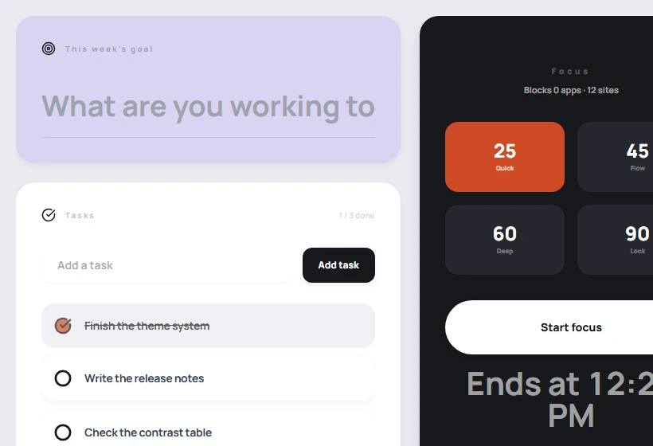
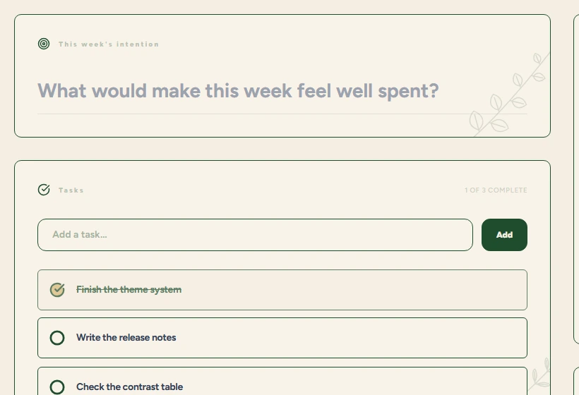

Press Start.
Discord dies.
Lock-In force-closes the apps and sites on your list every two seconds, for the whole session. No pause button. The one way out is a five-minute fuse that throws the session away. Free. Windows. 5 MB.
Windows will warn you it's unsigned. More info → Run anyway. That's the whole install.
- Discord.exeon your list
- Steam.exeon your list
- youtube.comon your list
- tiktok.comon your list
- LeagueClient.exeon your list
— me, 2am
p. 01
Does your night look like this?
p. 02
What happens when you press Start
Pick a session.
25, 45, 60 or 90 minutes. Anything 45 and over needs a two-second hold, so you never start a long one by accident.

Everything on your list dies every two seconds.
Close Lock-In and open it again and the session is still running — it picks up where it left off and keeps going until the time you set.

Your Chrome tabs hit a wall.
The extension redirects blocked sites to a dead end for as long as the session lasts.

Site blocking needs a connection; app blocking works offline.
p. 03
Yes, there's a way out.
It costs you the session.
Hold Bail out for two seconds. That starts a five-minute fuse — it doesn't stop anything. Your apps keep dying for those five minutes. When the fuse runs out the session ends and counts as zero: no minutes, no streak, however far in you were. You get one bail-out a day. Quitting the app doesn't speed it up; the fuse is on disk and still counting when you come back.
Not a punishment. A speed bump big enough that you'll finish instead.
p. 04
The Pack
Add a friend by handle and you'll see when they're in a session and how long their streak is. They see yours.
No feed, no likes, no leaderboard shouting at you.
p. 05
Four looks




Same enforcer underneath.
p. 06
What are you studying tonight?
exam in 3 wks!!
a suggestion, not a rule
Chemistry
2 × 45 min
- Block
- Discord, YouTube, TikTok, Steam, games
- Keep
- the browser — notes and flashcards
a suggestion, not a rule
History
90 min straight
- Block
- Discord, YouTube, TikTok, Steam, games
- Keep
- the browser — notes and flashcards
a suggestion, not a rule
Maths
25-min sets
- Block
- Discord, YouTube, TikTok, Steam, games
- Keep
- the browser — notes and flashcards
a suggestion, not a rule
Economics
45 + 45
- Block
- Discord, YouTube, TikTok, Steam, games
- Keep
- the browser — notes and flashcards
a suggestion, not a rule
Biology
60 min
- Block
- Discord, YouTube, TikTok, Steam, games
- Keep
- the browser — notes and flashcards
a suggestion, not a rule
Literature
90 min
- Block
- Discord, YouTube, TikTok, Steam, games
- Keep
- the browser — notes and flashcards
a suggestion, not a rule
Physics
45 × 2
- Block
- Discord, YouTube, TikTok, Steam, games
- Keep
- the browser — notes and flashcards
a suggestion, not a rule
Computing
60 min
- Block
- Discord, YouTube, TikTok, Steam, games
- Keep
- the browser — notes and flashcards
p. 07
What it isn't
For you if…
- you're on a Windows laptop
- you already know your three worst apps
- you've got exams coming
Not for you if…
- you're on a Mac or a phone (not yet)
- you want a blocker that asks "are you sure?"
- you need to pause halfway
p. 08
The install, honestly
Windows will say "Windows protected your PC". Click More info, then Run anyway.
Unsigned because a code-signing certificate costs about US$400. It's coming.
No admin rights? Get the portable installer instead.
p. 09
Why this exists
I built this because I'm someone who loses whole evenings to the same four apps. I tried every blocker; I always found the pause button. This is the version without one. If it helps you finish something, that's the whole point.
p. 10
Questions
Can I quit or uninstall it mid-session?
Yes. It's an ordinary Windows app — End task or uninstall will stop it, and it doesn't fight you. What it won't do is let you pause or shorten a session from inside the app, and if you close it and open it again, the session is still running.
Does it work offline?
App blocking, yes — completely. Site blocking, no: the Chrome extension needs a connection to know a session is running. The app itself opens and runs offline; your dashboard, streak and blocklist are stored on your computer.
What does it collect?
No analytics, no tracking. Your email and handle, your blocklist, and how many minutes you've focused so the streak works. Nothing about which sites you visit leaves your machine. The details are in the privacy policy.
Is there a Mac or phone version?
No. Windows 10 and 11 only.
What if I lock 90 minutes by accident?
Bail out — hold two seconds, wait five minutes, the session voids. That's also why 45 minutes and up need a two-second hold to start.
Why does Windows warn me about it?
The installer isn't code-signed. SmartScreen flags anything it hasn't seen before. More info → Run anyway.
Found a bug?
The Chrome Web Store listing has a support link.